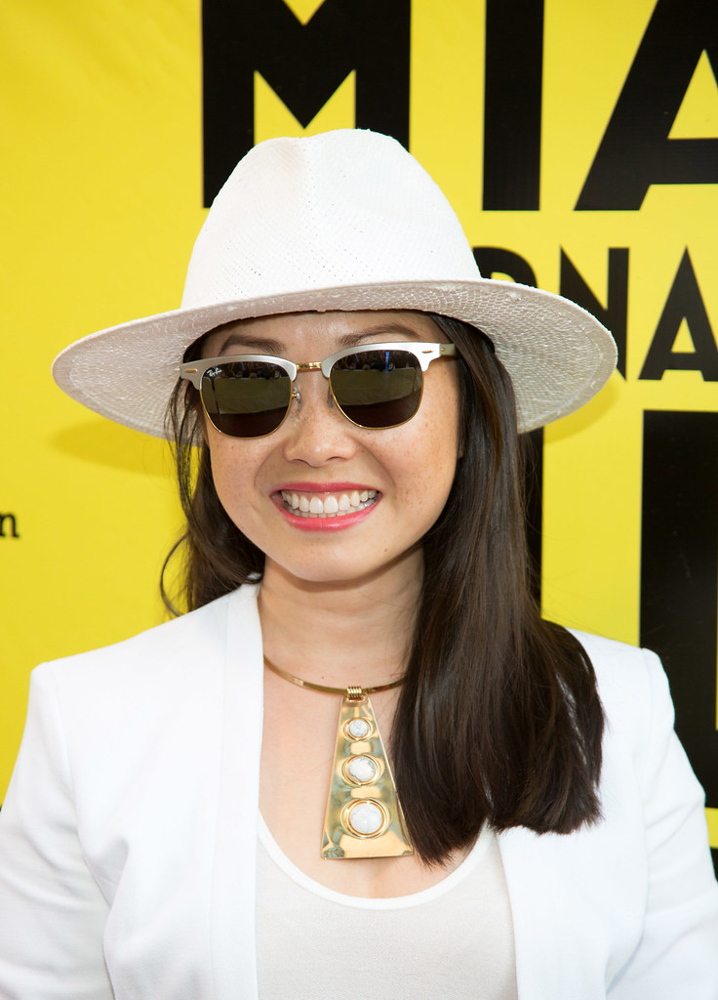

Lulu Wang and The Farewell (2019)

Personal Information
Movie Information
Behind-the-Scene
- Ethnicity: Chinese American
- Occupation: Director, Screenwriter, Producer
- Birth: Beijing, China, 1983
- Education: Boston College (BA in Literature and Music)
- Title: The Farewell
- Where to watch: Amazon Prime, Hulu
- Movie info: "The Farewell" is a 2019 comedy-drama film written and directed by Lulu Wang. The film stars Awkwafina as Billi, a Chinese-American woman who travels to China after learning that her grandmother, Nai Nai, has been diagnosed with terminal cancer. The family decides to keep the diagnosis a secret from Nai Nai, and instead, schedule an impromptu wedding as a guise for a family gathering. The film explores themes of cultural differences, family bonds, and the immigrant experience.
- Based on: The film is based on Lulu Wang's real-life experiences, which she first recounted on the radio show "This American Life."
- Awards:
- Independent Spirit Award for Best Feature
- Golden Globe Award for Best Actress – Motion Picture Comedy or Musical (Awkwafina)
- Satellite Award for Best Actress – Motion Picture
- Critics' Choice Movie Award for Best Acting Ensemble
- Sundance Film Festival Audience Award Nominee
- Palm Springs International Film Festival Directors to Watch Award
- Genre: Comedy-Drama
- Theme: The film explores themes of cultural identity, family loyalty, and the immigrant experience, focusing on the complex emotions that arise from living between two cultures.
- Cultural background: Lulu Wang drew from her own experiences as a Chinese immigrant in America to create a film that resonates with audiences through its authenticity and emotional depth.
Source
- Concept development: Wang discusses how the story evolved from her personal life and the challenges of balancing comedy and drama in the narrative.
Source
- Film technique: Wang employs a naturalistic style, using long takes and minimal editing to immerse the audience in the characters' lives and emotions.
Source
- Collaborator:
- Screenwriter: Lulu Wang wrote the screenplay, ensuring that it closely reflected her personal experiences.
Source
- Actor:
- Awkwafina as Billi - Wang chose Awkwafina for her ability to portray both the comedic and dramatic aspects of the character.
Source
- Shuzhen Zhao as Nai Nai - Wang appreciated Zhao's authentic and heartfelt performance, which brought depth to the character.
Source
- X Mayo as Little Nai Nai - Wang selected Mayo for her ability to balance humor and sincerity in the role.
Source
- Producer: The film was produced by Daniele Tate Melia, Peter Saraf, and Marc Turtletaub, who supported Wang's vision and helped bring the project to life.
Source
- Fund support: The film received financial backing from various independent film grants and organizations dedicated to supporting diverse voices in cinema.
Source
- Challenge: Wang faced challenges in ensuring the film's cultural authenticity while making it accessible to a broad audience. She also navigated the emotional complexities of telling a story so close to her own life.
Source
- Anecdote: Lulu Wang shared a story about how her family's real-life reaction to the film mirrored the emotional journey depicted on screen, highlighting the universal themes of love and loss.
Source